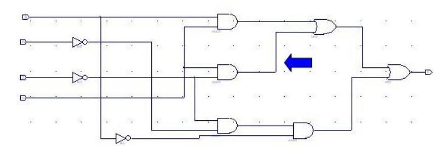
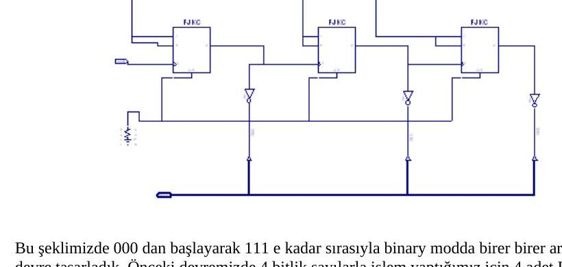
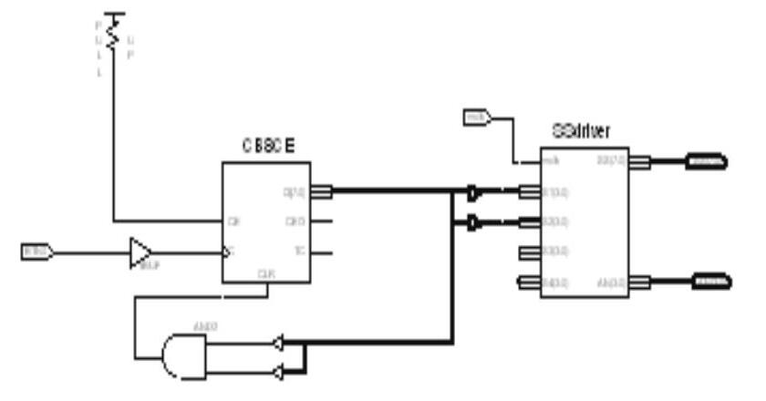
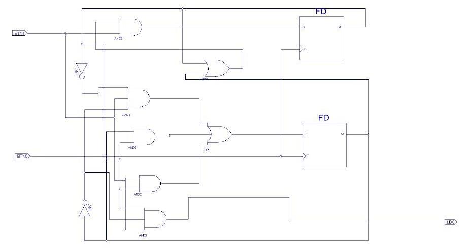

· EEM211
EEM211 Sayısal Mantık Tasarımı: 2006 Güz Laboratuvar Raporları (Xilinx, Deney 2–10)
EEM211 – Sayısal Mantık Tasarımı · 27.12.2006 · 16.10.2026
Bu yazı, Başkent Üniversitesi EEM211 Sayısal Mantık Tasarımı laboratuvarının 2006 güz dönemi deneyleri için arkadaşların hazırladığı rapor ve ön çalışmaları bir araya getiriyor (Ekim–Aralık 2006). Deneyler Xilinx ISE WebPack ortamında şematik ya da Verilog ile tasarlanıp ModelSim benzetimiyle doğrulanıyor, ardından Pegasus FPGA kartına yükleniyordu. Raporların çoğu kısa birer sonuç notu ve benzetim listesinden oluşuyor. Raporlardaki öğrenci adları, numaraları ve dosya adlarındaki kişisel bilgiler çıkarıldı; maskelenmiş raporlar (A, B, C üç farklı arkadaşın raporlarını gösteriyor) yazının sonunda ZIP olarak indirilebilir.
Deney 2: Xilinx ile ilk devre
Föydeki Şekil 1'deki kapı devresi Xilinx'te şematik olarak çizilip benzetimle dalga biçimi incelenmiş; sonra anahtarlar (switch) giriş, bir LED çıkış olarak atanıp devre karta yüklenmiş. F çıkışı 1 iken LED kırmızı yanıyor, 0 iken sönük kalıyor. Son olarak Lab02.bit dosyası derlenip başka bir mantık denenmiş: giriş bir buton, çıkış bir LED; butona basılınca LED yanıyor.
Deney 4: 4 bitlik toplayıcılar (Verilog)
- Lab04a: tam toplayıcı modülü
fadder, davranışsal olarak^,|,~,&operatörleriyle tanımlanmış;fourbitadder1modülü dörtfadderkullanılarak hiyerarşik biçimde kurulmuş. - Lab04b: AND, OR ve tümleyici kapıları ayrı modüller olarak yazılmış, aynı işi yapan
fadderStrbu üç kapıyla yeniden kurulmuş vefourbitadder2bununla oluşturulmuş.
İki tasarım da karta yüklendiğinde 4 bitlik ikili toplayıcı olarak çalışmış.
Deney 5: Asal sayı göstergesi ve 2 bitlik karşılaştırıcı
- 4 anahtarla girilen 4 bitlik sayı (1–15) asal ise LED yanan devre.
- İki adet 2 bitlik sayıyı (A ve B) karşılaştıran devre: B büyükse LD0, küçükse LD2, A = B ise LD1 yanıyor.
İki devre Xilinx şematikte çizilip giriş-çıkışları atanmış ve Pegasus kartında denenmiş.
Deney 6: Toplayıcılar ve eşlik üreticileri (kapı gecikmeleriyle)
- Bir bitlik tam toplayıcı, kapı gecikmeleri verilerek kapı düzeyinde tanımlanmış (a, b, cin → s, cout).
- İki 4 bitlik sayıyı toplayan dalgacık eldeli (ripple carry) toplayıcı kapı gecikmeleriyle kurulmuş.
- Carry-lookahead toplayıcı yapısal olarak gerçekleştirilmiş:
PGgenvecarrygenmodülleri ve bunları kullananfourbitscarrylookaheadüst modülü.
Raporun soru cevapları:
- Toplayıcılardaki mantıksal işlemleri yapan kapı sayısı aynı olduğundan gecikme de aynıdır (1a).
- 4 bit yerine 16 bitlik dalgacık eldeli toplayıcı tasarlansaydı gecikme 4 kat artardı (1b).
- Benzetim sonuçlarındaki gecikmeler farklıdır; carry-lookahead tasarımı (lab06-3) daha hızlı çalışır (2a).
Xilinx'in zamanlama raporuna göre en uzun yol, carry-lookahead tasarımında cin'den cout'a 13,454 ns (6 mantık seviyesi; 7,640 ns mantık, 5,814 ns yol), dalgacık eldeli tasarımda A<0>'dan cout'a 13,499 ns (6 seviye; 7,640 ns mantık, 5,859 ns yol). Rapor bundan carry-lookahead'in daha hızlı olduğu sonucunu çıkarıyor.
Not: 4 bitlik iki tasarımın gecikmeleri arasındaki fark yalnızca 0,045 ns; fark FPGA'daki yerleşimden (yol gecikmesinden) kaynaklanıyor, mantık gecikmeleri aynı. Carry-lookahead'in üstünlüğü daha geniş toplayıcılarda belirginleşir.
Deney 7: Hatalı devre, MUX'lu tasarım ve eşitlik denetleyicisi
Ön çalışmada ve raporda üç soru var:
- Verilen devrede bir kablo temas etmediği için devre yanlış sinyal üretiyormuş. Ön çalışmada Karnaugh haritasıyla F' = a'c + bd' + ad' bulunmuş; düzeltilmiş fonksiyon F = ad + c'd + a'b'c'. F, abcd = 0000, 0001, 0101, 1001, 1011, 1101, 1111 için 1'dir.
- Bir fonksiyon üç adet 2x1 MUX ile gerçekleştirilmiş: devre kapılarla kurulacak hâline göre hem sadeleşmiş hem hızlanmış. Raporda devrenin 0000, 0001, 0101, 1000, 1001, 1010, 1011 girişlerinde 1, abcd = 1101'de belirsiz sinyal ürettiği yazıyor.
- İki bitlik ab ve cd sayıları eşitse 1 veren devre: F = a'b'c'd' + a'bc'd + ab'cd' + abcd (16 durumun yalnızca 4'ünde 1).

Deney 8: Flip-floplar ve sayıcılar
Sorular, laboratuvar klasöründe de bulunan "EEM 211 Deney No: 8 – Flip floplar ve devre tasarımı" föyünün (son gözden geçirme 2005) sorularıyla aynı. İki raporda (A ve B) cevaplar şöyle:
- D flip-flop ile frekans bölücü: çıkışın tersi D girişine geri bağlandığından her saat darbesinde çıkış değişir; çıkış frekansı giriş frekansının yarısıdır. Frekansı yarıya indirmek gereken her yerde kullanılabilir.
- 4 bitlik asenkron geri sayıcı: JK flip-floplar (J = K = 1, pull-up) zincirleme bağlanmış; her flip-flopun Q çıkışı bir sonrakinin saat girişini sürüyor. Q(0)'dan Q(3)'e her çıkışın frekansı bir öncekinin yarısı; devre 1111'den 0000'a birer azalarak sayıyor. Pull-down ile CLR girişleri 0'da tutuluyor.
- Q çıkışlarıyla saat girişleri arasına tümleyici konunca devre ileri sayıyor; rapor A'da 3 flip-flopla 000'dan 111'e sayan sayıcı kurulmuş.
- Şekil 1'deki frekans bölme işi, Şekil 3'teki sayıcının Q(0) çıkışından alınarak değişiklik yapmadan gerçekleştirilebilir.

Deney 9: Mandallar ve flip-floplar (20 Aralık 2006)
- Sayıcı çıkışı yedi parçalı gösterge sürücüsüne (SSdriver) bağlanmış; göstergede 0'dan 9'a artan sayılar görülüyor.
- AND kapısı kaldırıldığında benzetimde 9'dan 0'a azalan bir sayma görülüyor.
Raporun sonuç kısmında: AND kapısının bütün bağlantıları kesildiğinde devre 0'dan 99'a kadar sayıyor.

Deney 10: Sonlu durum makineleri (26–27 Aralık 2006)
İki rapor (B ve C) aynı devreyi anlatıyor: devre kendisine gönderilen dizide 1011 bulduğunda 1 çıkışı üretiyor; iç içe geçen dizilere (overlapping) izin veriliyor. Devre iki D flip-flop (FD), AND-OR kapıları ve iki buton girişiyle (BTN0, BTN1) kurulmuş; rapor C'de ModelSim'in liste çıktısı da var.
